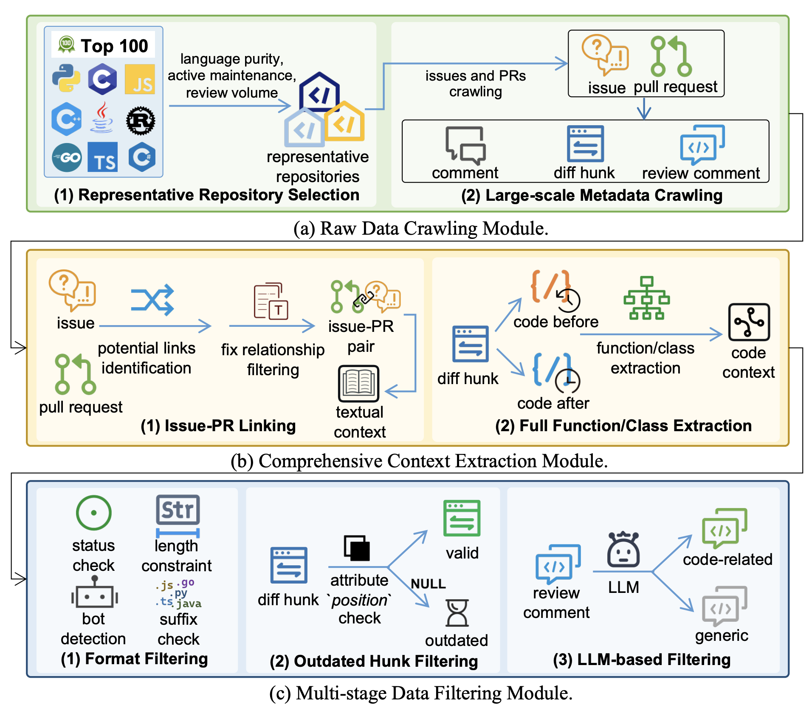
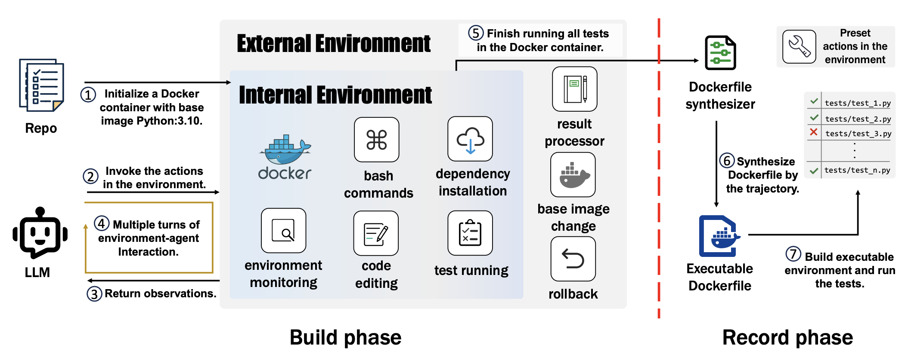
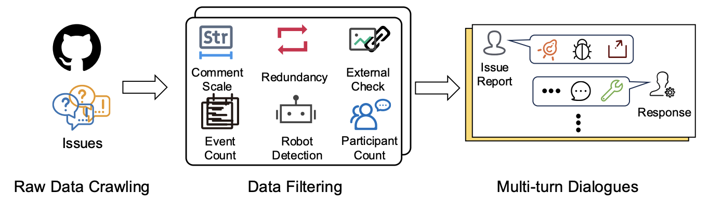
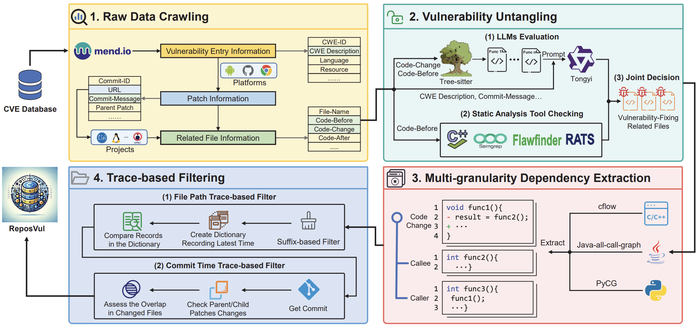
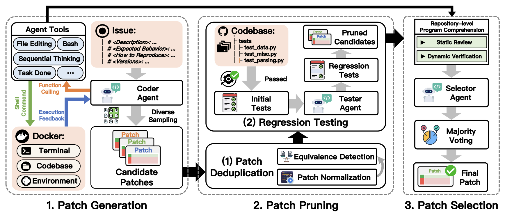
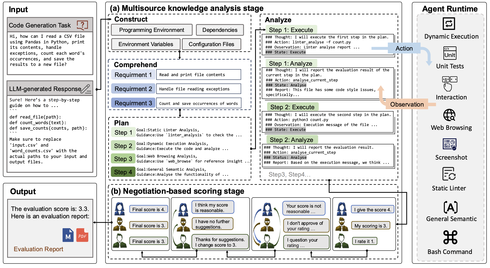
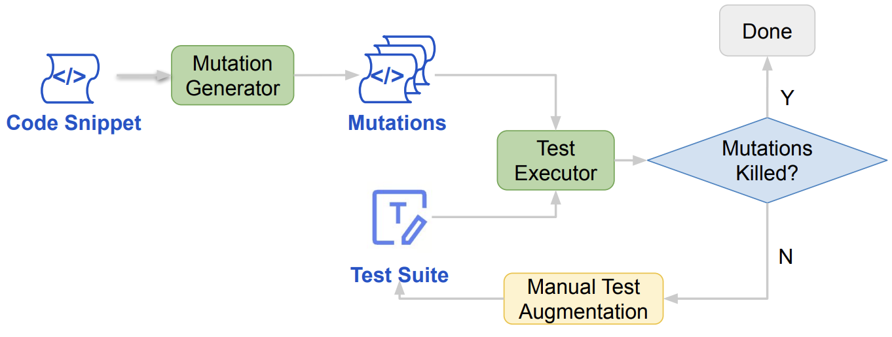
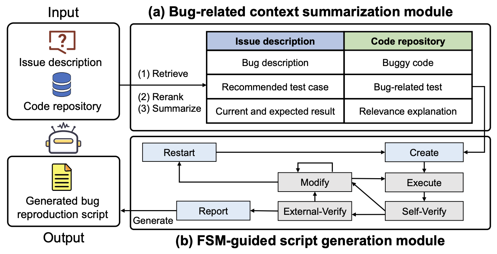
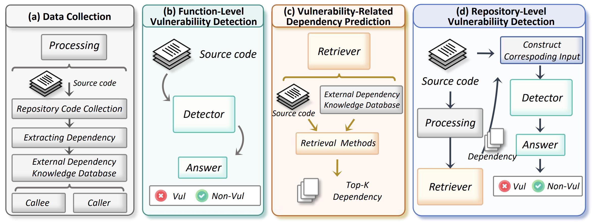
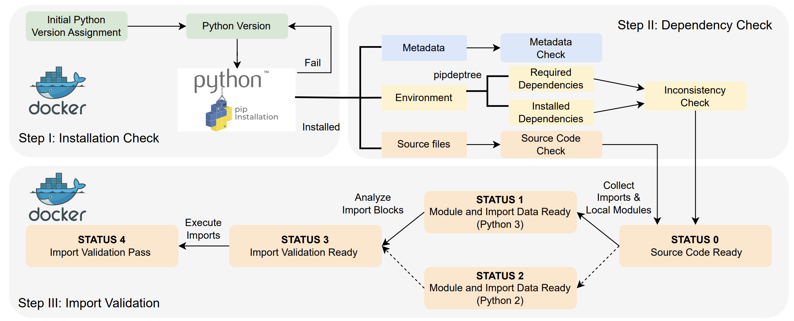

About Me
I am currently a Master's student at the School of Computer Science and Technology, Harbin Institute of Technology, Shenzhen (HITSZ), advised by Professor Cuiyun Gao.
My research is focused on areas such as Software Engineering, LLM Agents, and AI Coding.
Concurrently, I am working as an intern at the Trae AI department at ByteDance, working with Chao Peng.
My MBTI type is ENFP.🐕
Education Background
Master
Harbin Institute of Technology, Shenzhen
2024.09 - Present
Electronic Information Engineering
电子信息
Bachelor
Harbin Institute of Technology, Shenzhen
2020.09 - 2024.06
Computer Science and Technology
计算机科学与技术
Senior High School
The First High School of Changsha, Hunan
2017.09 - 2020.07
长沙市第一中学
Publications
First-Author Papers



Collaborative Papers



CCF-A
Repomastereval: Evaluating code completion via real-world repositories
40th IEEE/ACM International Conference on Automated Software Engineering (ASE 2025 Industry Showcase)

CCF-A
AEGIS: An agent-based framework for general bug reproduction from issue descriptions
33rd ACM International Conference on the Foundations of Software Engineering (FSE 2025 Industry Track)


Activities
Intern at Trae AI group in ByteDance Ltd.
June 2024 - Present
I am working on AI for SE and benchmark for code tasks, and working with Chao Peng and Pengfei Gao.
Experiences
FSE/ISSTA 2025
Trondheim, Norway
June 2025
Internetware 2024
Macau, China
July 2024
ICSE 2024
Lisbon, Portugal
April 2024
Honors & Awards
Third Prize
CCF ChinaSoft Prototype Software System Challenge, 2025
National Scholarship (国家奖学金，专业第1)
Ministry of Education of China, 2025
Provincial-level outstanding students(省三好学生)
Education Department of Heilongjiang Province, 2025
Top Ten Talents (哈工大深圳校区十佳英才)
Harbin Institute of Technology, Shenzhen, 2025
Best Paper Award
ICSE 2024 Industry Challenge Track, 2024
Outstanding Graduates (优秀毕业生)
Harbin Institute of Technology, 2024
Outstanding student model (优秀学生标兵)
Harbin Institute of Technology, 2024
Huawei Intelligent Base Scholarship (华为智能基座奖学金)
Huawei, 2024
Master's Academic Special Scholarship of HITSZ * 2 (最高级)
Harbin Institute of Technology, Shenzhen, 2025-2026
Master's Academic First-class Scholarship of HITSZ * 1
Harbin Institute of Technology, Shenzhen, 2024
Bachelor's Academic First-class Scholarship of HITSZ * 2 (最高级)
Harbin Institute of Technology, Shenzhen, 2023-2024
Bachelor's Academic Third-class Scholarship of HITSZ * 1
Harbin Institute of Technology, Shenzhen, 2022
Meritorious
Mathematical Contest in Modeling / Interdisciplinary Contest in Modeling (MCM / ICM), 2023
First Prize
China Undergraduate Mathematical Contest in Modeling (Guangdong Province), 2023
First Prize
The Chinese Mathematics Competitions (CMC) Preliminary Round, 2023
Third Prize
National Student Computer System Capability Challenge (龙芯杯) Final Round, 2023
Get In Touch
If you are interested in my research or have any questions, please feel free to contact me via the following email:
200111107@stu.hit.edu.cn OR buotte@qq.com